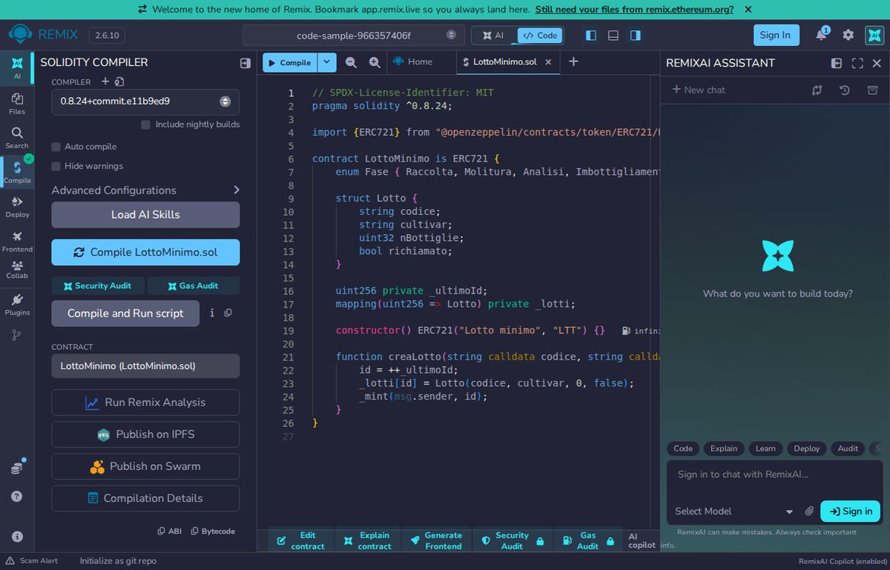
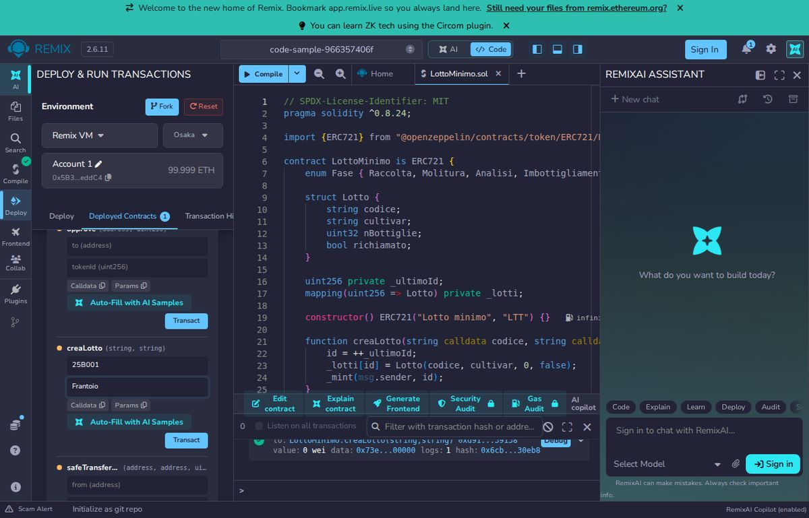

5. Modelling the lot
From here on we build a small version you can write in an afternoon. You need Node.js, Hardhat and the OpenZeppelin libraries. The language is called Solidity.
A smart contract is like a vending machine: the rules are inside the machine, and everyone who uses it finds the same rules.
Three ideas
Struct: a card with several fields (code, cultivar, number of bottles, recalled). Enum: a list of possible values, here the phases. ERC-721: the standard for "unique" tokens, where each number identifies exactly one object; we use one token per lot, so the lot has an owner and a number.
// SPDX-License-Identifier: MIT
pragma solidity ^0.8.24;
import {ERC721} from "@openzeppelin/contracts/token/ERC721/ERC721.sol";
contract LottoMinimo is ERC721 {
enum Fase { Raccolta, Molitura, Analisi, Imbottigliamento }
struct Lotto {
string codice;
string cultivar;
uint32 nBottiglie;
bool richiamato;
}
uint256 private _ultimoId;
mapping(uint256 => Lotto) private _lotti;
constructor() ERC721("Lotto minimo", "LTT") {}
function creaLotto(string calldata codice, string calldata cultivar) external returns (uint256 id) {
id = ++_ultimoId;
_lotti[id] = Lotto(codice, cultivar, 0, false);
_mint(msg.sender, id);
}
}Line by line
import: takes the ERC-721 base from the OpenZeppelin library (installed withnpm i @openzeppelin/contracts).enum Fase: the four phases in order; internally they are 0, 1, 2, 3.struct Lotto: a lot's card.nBottigliestarts at 0 and is set at bottling._ultimoIdcounts lots;_lottilinks each token number to its card.- The
constructorgives the token a name and a symbol. creaLotto: raises the counter, saves the card and, with_mint, creates the token owned by the caller (msg.sender).
In the full Pietre di Vita contract the card also has area, harvest date, kilos of olives and recall reason, and the lot code is checked for uniqueness. The basic logic is this one.
Try it now
Compile the contract and create a lot straight from your browser.
Free, runs in your browser, public data only. The contract opens ready in the Remix online editor.
Remix is in English. If the console shows a red "Could not resolve package version" message while the page opens, press Compile once more: the OpenZeppelin library is downloaded and the green tick appears.
What you should see
In Remix: Solidity compiler tab, compiler 0.8.24, Compile button: a green tick appears. Then the Deploy & run tab, Deploy, and in creaLotto fill the two fields with 25B001 and Frantoio and press transact. Calling ownerOf with 1 returns the address of your test account. If you prefer your computer, copy the file into the contracts/ folder of the Hardhat project and run npx hardhat compile; in a folder holding only this contract the result is:
Compiled 16 Solidity files successfully (evm target: cancun).

Try it yourself
Create a folder, run npx hardhat init (choose a JavaScript project), then npm i @openzeppelin/contracts. Copy the code into contracts/LottoMinimo.sol and run npx hardhat compile. If you see "Compiled ... Solidity files successfully" it works.
What you learned
- A struct gathers a lot's data in one card.
- An enum lists the possible phases in order.
- With ERC-721 each lot is a token with a number and an owner.